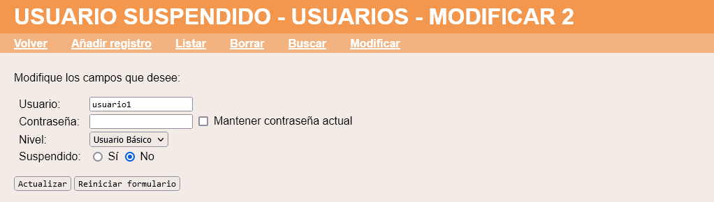
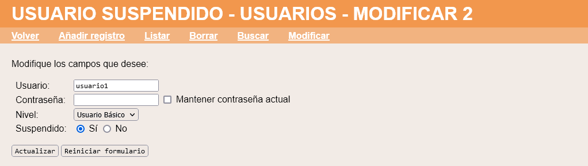
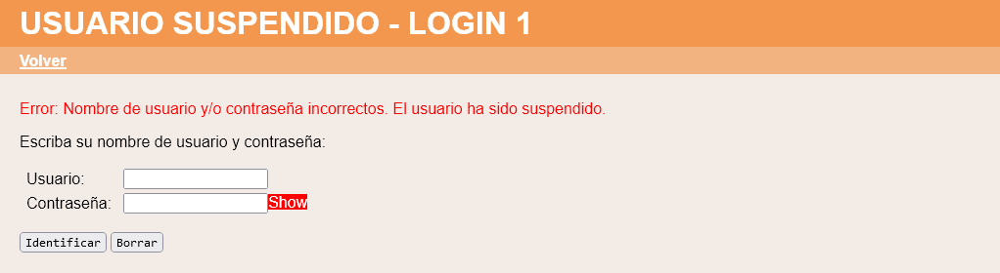
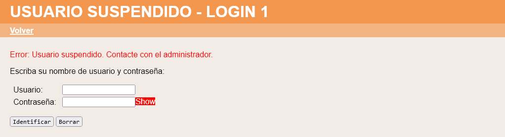

En este ejercicio se debe ampliar la aplicación proporcionada en la plantilla de manera que si un usuario no escribe correctamente su contraseña se suspenda al usuario. Un usuario suspendido no podrá acceder a la aplicación. La aplicación debe funcionar tanto en SQLite como en MySQL. Haga una captura de la pantalla en MySQL en la que se vea la base de datos de la aplicación y el contenido de la tabla de usuarios.
Usuario suspendido - Comentarios
Campo "suspendido" en la tabla Usuarios
La tabla de Usuarios incluirá un nuevo campo llamado "suspendido" que podrá tener dos valores, uno que represente que el usuario está suspendido y otro que no (pueden ser valores numéricos o cadenas, a elección del alumno, pero se aconseja utilizar valores numéricos).
Los usuarios iniciales (tanto el usuario root como los del fichero demo.php) no estarán suspendidos.
Creación de usuarios
Al crear un usuario, el usuario se creará siempre como No suspendido y no se podrá elegir lo contrario.
Modificación de usuarios
Al modificar un registro de usuario sí que se podrá modificar el estado de suspensión:


Conexión
Si un usuario escribe la contraseña incorrecta, se mostrará un aviso indicando que se ha suspendido al usuario:

Si un usuario suspendido intenta conectarse, se mostrará un aviso indicando que no puede hacerlo:

Usuario suspendido - Ejemplo de código HTML
<tr>
<td>Suspendido:</td>
<td>
<input type="radio" name="suspendido" value="1" > Sí
<input type="radio" name="suspendido" value="0" checked> No
</td>
</tr>